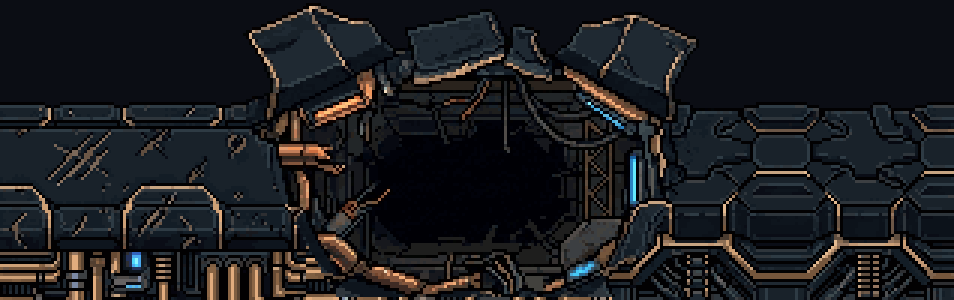
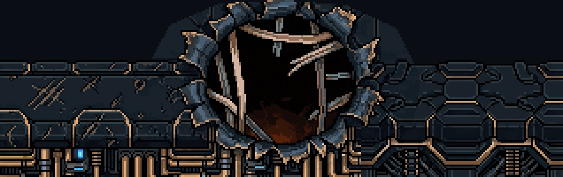
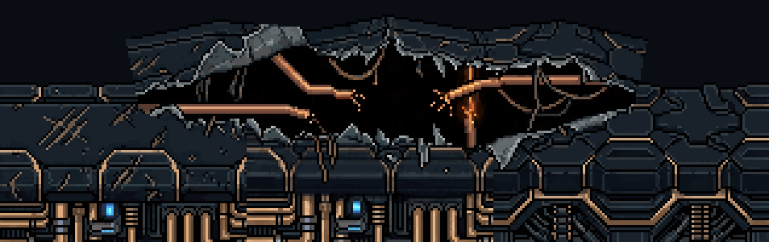
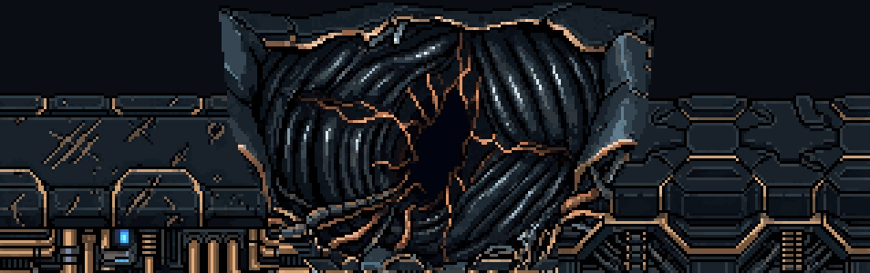

O rombo da Serpente: 4 conceitos
28/10/2026 · S1, a luta da Serpente · spec docs/superpowers/specs/2026-10-28-serpente-luta-s1-design.md · ← a fusão (aprovada). Nada foi instalado nem commitado.
Você: "o cenário do boss não condiz com a fase". A sua escolha: ela sai de um rombo rasgado no próprio casco, na arte e nas cores dele. É dele que a fusão nova vai se arrancar no S2.
Como foram feitos. Juntei as peças aprovadas da proa do casco (o duto, o duto 2 e a placa), do jeito que a faixa as põe. O PixelLab redesenhou só o miolo, por inpaint, e o casco em volta ficou idêntico. Cada conceito aparece de três formas:
- sozinho e ampliado;
- no jogo de verdade: o treino da F3, com o casco parado na proa e o tratamento de imagem (Atmosfera) por cima;
- com ela no posto novo (x 300) e afundada no rombo, a borda da frente cobrindo as roscas. A estrela já saiu, porque o S1 a tira.
É uma maquete. A borda da frente foi separada automaticamente, só para mostrar a ideia. A do conceito escolhido vai ser recortada à mão.
A — O rasgo (recomendado)
As chapas dobradas para cima e para fora, os canos de cobre partidos e o interior escuro com o maquinário e duas luzes azuis. É o que a spec pedia ("rasgado e com as bordas viradas para fora") e o que mais conversa com o casco. As chapas erguidas emolduram a serpente.



B — A cratera
Um buraco redondo de explosão, com as bordas enroladas em pétalas, costelas claras atravessando e um brilho laranja no fundo. Lê bem, mas como um buraco de impacto, e a borda erguida forma uma cúpula acima do casco. As costelas passam na frente dela.



C — A fenda
Uma fenda longa e rasa, com as duas bordas erguidas, canos cruzando o vão e faíscas laranja. É a mais larga e a mais rasa: ela sairia de uma rachadura, não de um buraco. ⚠️ A borda de cima seguiu a linha da minha máscara e ficou quase reta. Se for a escolhida, ela precisa de mais uma passada para sair irregular.



D — A chapa arrancada
A blindagem arrancada mostra por baixo uma membrana escura em gomos, com veias laranja e uma fenda negra no meio. É a mais orgânica: o Leviatã como bicho vivo por baixo do metal, que conversa com o gore da fusão. ⚠️ O mesmo da C: a borda de cima saiu quase reta e precisaria de mais uma passada.



Para você decidir
Qual rombo? A, B, C, D, uma mistura (por exemplo, as chapas do A com a membrana do D por dentro), ou outra rodada.
Depois da escolha: recorto o fundo e a borda da frente à mão e passo para o código do S1. O casco freia e para com o rombo no posto, ela sobe de dentro dele, e vêm os postos, a investida, as veias e o resto.